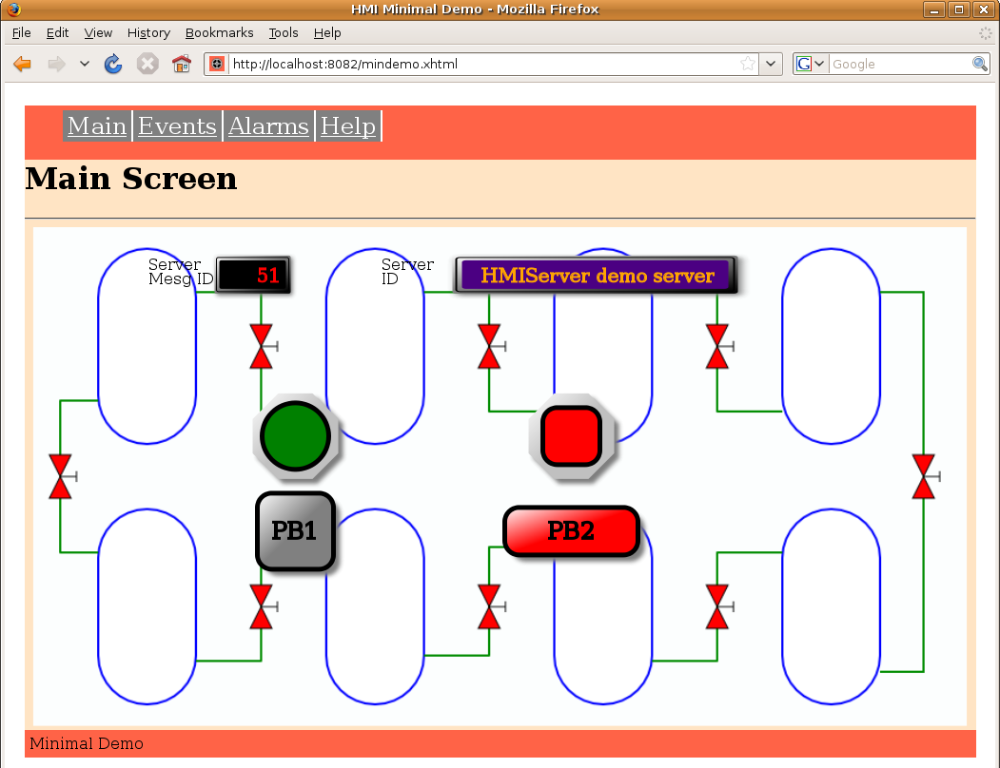
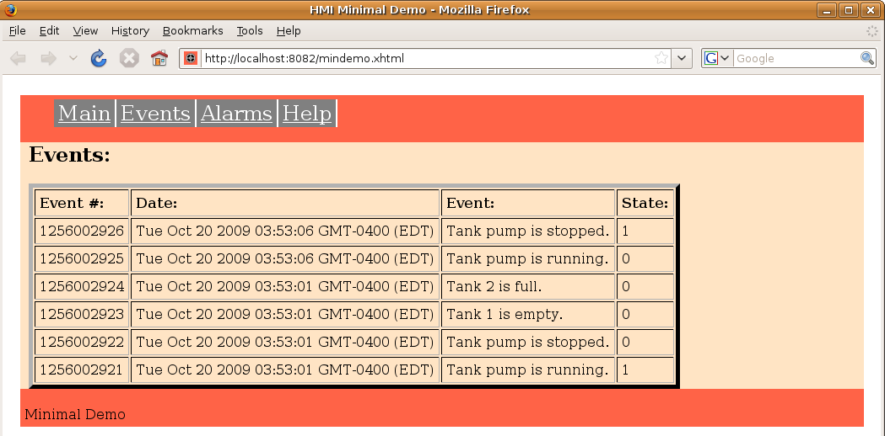
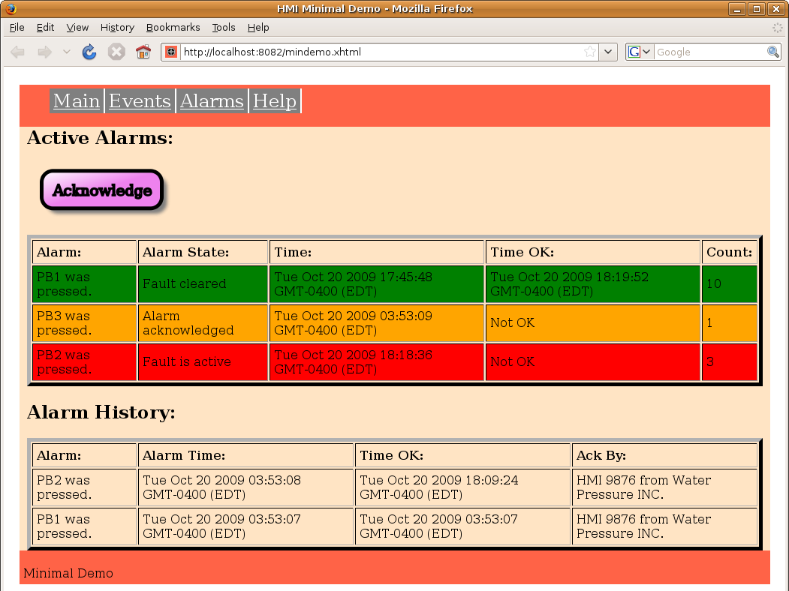
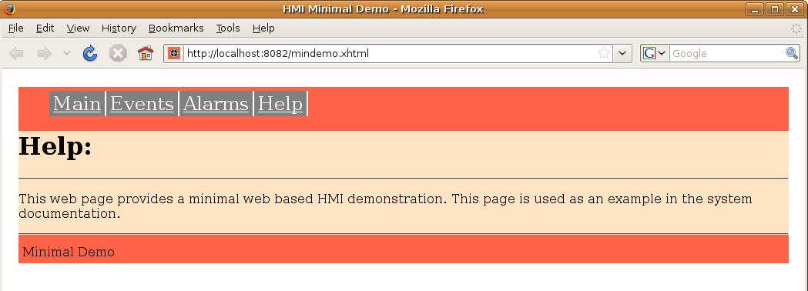

MBLogic
for an open world in automation
MBLogic
for an open world in automation
Help - HMI Page Layout
Overview:
This help topic goes over a simple example which we will call "mindemo.xhtml". It explains what each part of the page is for. More complex systems can be based on this sample application, with new HTML and SVG added as required.
Page Design:
This document is not intended as a tutorial on HTML or XHTML. There are plenty of other more authoritative sources for that. For example, the W3C organisation has the specifications on line. See the W3C specs for more details.
What this document does do is suggest how to lay out an HMI application through the use of a basic example with four screens.
   
Basic Example:
The following shows a very simple example.
- Declare the XHTML DTD and and other standard information required to
define a web page.
<?xml version="1.0" encoding="UTF-8"?> <!DOCTYPE html PUBLIC "-//W3C//DTD XHTML 1.0 Strict//EN" "http://www.w3.org/TR/xhtml1/DTD/xhtml1-strict.dtd"> <html xmlns="http://www.w3.org/1999/xhtml" xmlns:svg="http://www.w3.org/2000/svg" xmlns:xul="http://www.mozilla.org/keymaster/gatekeeper/there.is.only.xul" xmlns:xlink="http://www.w3.org/1999/xlink">
- Import any CSS and Javascript libraries required. This should include the
HMI communications and display libraries. In this example, we are
importing the CSS style sheet, the standard libraries.
<head> <link rel="icon" type="image/png" href="demo_icon.png" /> <!-- Version 20-Oct-2009 --> <title>HMI Minimal Demo</title> <!-- General page layout style sheet. --> <link rel="stylesheet" href="mindemopagelayout.css" type="text/css"></link> <!-- Style sheet to control graphic buttons. --> <link rel="stylesheet" href="hmibuttons.css" type="text/css"></link> <!-- JSON parser. --> <script type="text/javascript" src="json2.js"></script> <!-- HMI Protocol functions. --> <script type="text/javascript" src="libhmiclient2.js"></script> <!-- MBHMI Library. --> <script type="text/javascript" src="libmbhmi.js"></script> <!-- MBHMI Library for events, alarms, and error display. --> <script type="text/javascript" src="libmbevents.js"></script>
- Import any Javascript libraries that are being used to store data.
This includes items such as event and alarm texts, lists of text messages, etc.
In this example, we are importing a file which contains the message texts
for the events and alarms. We've placed these in a separate file to make
them more managable, and also to avoid cluttering up the main HTML file.
This same technique can be used for any text which has to be imported.
<!-- Alarm and event text message definitions. --> <script type="text/javascript" src="eventstext.js"></script> <!-- Error text message definitions, including alarm states. --> <script type="text/javascript" src="errortexts.js"></script> </head>
- Be sure the "body" includes the name of the function to run "onload". This
is the function which will run on start up and enable the polling process.
<body onload="pageinit();">
- We are going to enclose the entire page inside a "div" to help format it
We have to remember to close this tag at the end.
<div id="filler">
- Make sure your navigation menu includes some means of selecting which
"screens" should get displayed. The HMI library has a function intended to
assist with this. In this example, we are using an HMI library function
to select between the "main", "events", and "alarms" screens. These operate
by changing the styles associated with each.
<!-- This is the standard nav bar. --> <div id="nav"> <ul> <li><a onclick = "ScreenSelect.SelectScreen('mainscreen')">Main</a></li> <li><a onclick = "ScreenSelect.SelectScreen('eventscreen')">Events</a></li> <li><a onclick = "ScreenSelect.SelectScreen('alarmscreen')">Alarms</a></li> <li><a onclick = "ScreenSelect.SelectScreen('helpscreen')">Help</a></li> </ul> </div> - Create your display SVG and XHTML. This will be the part of your
application where you determine what your application actually looks
like. This example creates an SVG screen with two pilot lights, two
push buttons, and a numeric display. It then creates the tables for
the events and the alarms. Much of what we see below is for the push
buttons because of the large number of artistic effects added to each.
This is mainly just copy/paste though, so there isn't really as much to
it as it may appear at first sight. First, we start with the main screen.
The screen starts with a "div" tag that contains an "id" that is associated
with the screen control menu.
<!-- ################################################################## --> <!-- This acts as a container for the main screen content. --> <div id="screencontent"> <!-- Put main content here --> <div id="mainscreen"> <h1>Main Screen</h1> <hr></hr> <svg xmlns="http://www.w3.org/2000/svg" version="1.1" baseProfile="full" width="1000px" height="525px" xmlns:html="http://www.w3.org/1999/xhtml" xmlns:xul="http://www.mozilla.org/keymaster/gatekeeper/there.is.only.xul"> <!-- ################################################################### --> <!-- This section contains the standard re-usable graphics definitions. --> <!-- These are some definitions which are used below. --> <defs> <!-- These apply a linear colour gradient across the buttons. More colours can be added as needed. They only apply to the current "screen", and so have to be repeated if we need them elsewhere. --> <!-- Red gradients. --> <linearGradient id="MB_RedGradient" x1="1" y1="1" x2="0" y2="0"> <stop offset="50%" stop-color="red" /> <stop offset="100%" stop-color="white" /> </linearGradient> <!-- Grey Gradients. --> <linearGradient id="MB_GreyGradient" x1="1" y1="1" x2="0" y2="0"> <stop offset="50%" stop-color="grey" /> <stop offset="100%" stop-color="white" /> </linearGradient> <!-- Black Gradients. --> <linearGradient id="MB_BlackGradient" x1="1" y1="1" x2="0" y2="0"> <stop offset="50%" stop-color="black" /> <stop offset="100%" stop-color="white" /> </linearGradient> <linearGradient id="MB_SilverGradient" x1="1" y1="1" x2="0" y2="0"> <stop offset="50%" stop-color="silver" /> <stop offset="100%" stop-color="white" /> </linearGradient> <!-- The following filter is used to add a drop shadown. --> <filter id="MB_DropShadowFilter"> <feGaussianBlur stdDeviation="2"> </feGaussianBlur> </filter> </defs> <!-- Push buttons. --> <defs> <!-- Square push button. 80 x 80 px. --> <g id="MB_SquarePB"> <!-- This rectangle is used for the drop shadown and needs to match the size used for the button. --> <rect x="-33" y="-33" width="80" height="80" rx="15" fill="grey" stroke="none" stroke-width="0px" filter="url(#MB_DropShadowFilter)"/> <!-- This is the actual button. --> <rect x="-40" y="-40" width="80" height="80" rx="15"/> </g> <!-- Rectangular push button. 140 x 50 px --> <g id="MB_RectangularPB"> <!-- This rectangle is used for the drop shadown. --> <rect x="-63" y="-18" width="140" height="50" rx="15" fill="grey" stroke="none" stroke-width="0px" filter="url(#MB_DropShadowFilter)"/> <!-- This is the actual button. --> <rect x="-70" y="-25" width="140" height="50" rx="15"/> </g> </defs> <!-- Pilot lights. --> <defs> <!-- This is a decorative octagonal nut. --> <g id="MB_NUT"> <polygon transform="translate(5,5)" fill="grey" stroke="none" filter="url(#MB_DropShadowFilter)" points="18,-45 -18,-45 -45,-18 -45,18 -18,45 18,45 45,18 45,-18 18,-45" /> <polygon fill="url(#MB_SilverGradient)" stroke="none" points="18,-45 -18,-45 -45,-18 -45,18 -18,45 18,45 45,18 45,-18 18,-45" /> </g> <!-- Circular pilot light. r = 35 px--> <g id="MB_PilotLightRound"> <!-- This is a decorative nut. --> <use xlink:href="#MB_NUT"/> <!-- This is the part which changes colour. --> <circle cx="0px" cy="0px" r="35px" stroke="black" stroke-width="5px"/> </g> <!-- Rectangular pilot light with rounded corners. 60 x 60 px --> <g id="MB_PilotLightSquare"> <!-- This is a decorative nut. --> <use xlink:href="#MB_NUT"/> <!-- This is the part which changes colour. --> <rect x="-30" y="-30" width="60" height="60" rx="15" stroke="black" stroke-width="5px" /> </g> </defs> <defs> <!-- This is a decorative gradient for the display. --> <linearGradient id="MB_DigitBezelGradient" x1="1" y1="1" x2="0" y2="0"> <stop offset="0%" stop-color="black" /> <stop offset="100%" stop-color="whitesmoke" /> </linearGradient> <!-- This is a decorative box for display numbers and text. This is sized appropriately to hold 4 numeric digits of 24 point font. --> <!-- This is a decorative box for display numbers and text. This is sized appropriately to hold 4 numeric digits of 24 point font. --> <g id="MB_DigitBezel"> <!-- This provides the drop shadow. --> <rect x="-38" y="-18" width="80" height="40" rx="2" fill="grey" filter="url(#MB_DropShadowFilter)" stroke="none"/> <!-- This provides the outer ring. --> <rect x="-40" y="-20" width="80" height="40" rx="2" fill="url(#MB_DigitBezelGradient)" stroke="none"/> <!-- This provides the middle ring. --> <rect x="-38" y="-18" width="76" height="36" rx="2" fill="url(#MB_DigitBezelGradient)" stroke="black"/> <!-- This provides the inner background. --> <rect x="-35" y="-15" width="70" height="30" rx="2" /> </g> <!-- This is a decorative box for display numbers and text. This is twice the width of MB_DigitBezel. --> <g id="MB_DigitBezel2"> <!-- This provides the drop shadow. --> <rect x="-73" y="-18" width="150" height="40" rx="2" fill="grey" filter="url(#MB_DropShadowFilter)" stroke="none"/> <!-- This provides the outer ring. --> <rect x="-75" y="-20" width="150" height="40" rx="2" fill="url(#MB_DigitBezelGradient)" stroke="none"/> <!-- This provides the middle ring. --> <rect x="-73" y="-18" width="146" height="36" rx="2" fill="url(#MB_DigitBezelGradient)" stroke="black"/> <!-- This provides the inner background. --> <rect x="-70" y="-15" width="140" height="30" rx="2" /> </g> </defs> <!-- %%%%%%%%%%%%%%%%%%%%%%%%%%%%%%%%%%%%%%%%%%%%%%%%%%%%%%%%%%%%%%%%%%%%%% --> <!-- This adds an image to the background. --> <image xlink:href="processdrawing.png" width="1000" height="525"/> <!-- This displays the server message ID. --> <g transform="translate(240, 50)"> <text x="-110" y="-5" font-size="16">Server</text> <text x="-110" y="10" font-size="16">Mesg ID</text> <g fill="black"> <use xlink:href="#MB_DigitBezel"/> </g> <text id="MsgIDText" x="30" y="8" stroke="red" fill="red" font-size="20" text-anchor="end">msgid:</text> </g> <!-- This displays the server ID. --> <g transform="translate(600,50)"> <text x="-225" y="-5" font-size="16">Server</text> <text x="-225" y="10" font-size="16">ID</text> <g transform="scale(2,1)" fill="indigo"> <use xlink:href="#MB_DigitBezel2"/> </g> <text id="ServerIDText" x="-120" y="8" stroke="orange" fill="orange" font-size="20">serverid:</text> </g> <!-- We group a pilot light and push button so we can move them around together . --> <g transform="translate(285,220)"> <!-- The first pilot light is a circle. --> <g id="PL1"> <use xlink:href="#MB_PilotLightRound" /> </g> <!-- This first button illustrates a momentary push button. --> <g transform="translate(0,100)" fill="url(#MB_GreyGradient)" class="buttonactivate" onmousedown="MBHMIProtocol.WriteImmediate('PB1', 1);" onmouseup="MBHMIProtocol.WriteImmediate('PB1', 0);" onmouseout="MBHMIProtocol.WriteImmediate('PB1', 0);"> <!-- This is the actual button. --> <use xlink:href="#MB_SquarePB" /> <!-- This is the text label. --> <text x="0" y="8" font-size="24" stroke-width="2px" text-anchor="middle">PB1</text> </g> </g> <!-- We group a pilot light and push button so we can move them around together . --> <g transform="translate(575,220)"> <!-- This shows a rectangular pilot light with rounded corners. --> <g id="PL2"> <use xlink:href="#MB_PilotLightSquare" /> </g> <!-- This shows a maintained push button. --> <g transform="translate(0,100)" fill="url(#MB_RedGradient)" class="buttonactivate" onmousedown="MBHMIProtocol.WriteToggleImmediate('PB2', 'PL2');"> <!-- This is the actual button. --> <use xlink:href="#MB_RectangularPB" /> <!-- This is the text label. --> <text x="0" y="8" font-size="24" stroke-width="2px" text-anchor="middle">PB2</text> </g> </g> </svg> </div> <!-- End of the main page. --> - Create the next screen. This follows immediately after the previous one.
Be sure to close off the previous screen with a closing "div" tag, and
start the new one with an opening "div" tag and an "id" which can be
controlled by the screen display menu.
<div id="eventscreen"> <h2>Events:</h2> <p> <!-- This is the table used to display the events. --> <table id="EventDisplay" border="5" cellpadding="5"> <tr> <td><b>Event #:</b></td> <td><b>Date:</b></td> <td><b>Event:</b></td> <td><b>State:</b></td> </tr> </table> </p> </div> <!-- End of the events page. -->
- Now, create the third screen the same way. Don't forget the opening
and closing "div" tags.
<div id="alarmscreen"> <h2>Active Alarms:</h2> <p> <svg xmlns="http://www.w3.org/2000/svg" xmlns:html="http://www.w3.org/1999/xhtml" width="250px" height="75"> <defs> <!-- The following filter is used to add a drop shadown. --> <filter id="AlarmDropShadowFilter"> <feGaussianBlur stdDeviation="2"> </feGaussianBlur> </filter> <!-- For violet buttons. --> <linearGradient id="AlarmGradient" x1="1" y1="1" x2="0" y2="0"> <stop offset="50%" stop-color="violet" /> <stop offset="100%" stop-color="white" /> </linearGradient> <!-- Rectangular push button. --> <g id="MB_AlarmPB"> <!-- This rectangle is used for the drop shadown. --> <rect x="-73" y="-18" width="160" height="50" rx="15" fill="grey" stroke="none" stroke-width="0px" filter="url(#AlarmDropShadowFilter)"/> <!-- This is the actual button. --> <rect x="-80" y="-25" width="160" height="50" rx="15"/> </g> </defs> <!-- Push button to acknowledge alarms. --> <g transform="translate(100, 35)" fill="url(#AlarmGradient)" class="buttonactivate" onclick="MBHMIProtocol.AddAlarmAck();"> <!-- This is the actual button. --> <use xlink:href="#MB_AlarmPB" /> <!-- This is the text label. --> <text x="-65" y="8" font-size="20" stroke-width="2px">Acknowledge</text> </g> </svg> </p> <p> <!-- This is the table used to display the alarms. --> <table id="AlarmDisplay" border="5" cellpadding="5"> <tr> <td><b>Alarm:</b></td> <td><b>Alarm State:</b></td> <td><b>Time:</b></td> <td><b>Time OK:</b></td> <td><b>Count:</b></td> </tr> </table> </p> <h2>Alarm History:</h2> <!-- This is the table used to display the alarm history. --> <p> <table id="AlarmHistoryDisplay" border="5" cellpadding="5"> <tr> <td><b>Alarm:</b></td> <td><b>Alarm Time:</b></td> <td><b>Time OK:</b></td> <td><b>Ack By:</b></td> </tr> </table> </p> </div> <!-- End of the alarms page. -->
- Finally, include the last (help) screen.
<div id="helpscreen"> <h1>Help:</h1> <hr></hr> <p>This web page provides a minimal web based HMI demonstration. This page is used as an example in the system documentation. </p> <hr></hr> </div> <!-- End of the help page. -->
- Now we can close off the body of the page, including adding any HTML
that we want to have appear at the foot of the page.
<!-- End of the screen container. --> </div> <!-- Standard footer --> <div id="footer"> <p>Minimal Demo</p> </div> </div> </body>
- Add the initialisation Javascript for each screen element. If you are
using the HMI display library, this will largely consist of creating
display objects and adding them to the display list. The "HMIClient" object
("var MBHMIProtocol = new HMIClient") handles setting up communications with
the server. The final parameter determines whether the communications are
"synchronous" (false) or "asynchronous" (true). See the client communications
library documentation for when to use synchronous or asynchronous communications.
<script> <![CDATA[ var svgDocument; var xmlns="http://www.w3.org/2000/svg"; // Make a list of all the screens that can be selected. var ScreenTable = ["mainscreen", "eventscreen", "alarmscreen", "helpscreen"]; // This creates an object that controls display of the screens. var ScreenSelect = new MB_ScreenSelect(document, ScreenTable); // Make a list of all the address tags to be monitored. This is what we // send to the server asking for values. var ReadList = ["PL1", "PL2"]; // Make a list of the alarm and event zones to be monitored. Zones are // used to filter alarms and events to only those we are interested in. var AlarmZoneList = ["zone1", "zone2", "zone3"]; var EventZoneList = ["zone1", "zone2", "zone3"]; /* This handles communications with the server. The configuration parameters are read from a file. The final parameter enables asynchronous communications. */ /* This handles communications with the server. The parameters are: 1) The host name the web page was loaded from. 2) The port number the web page was loaded from. 3) The client ID string. 4) The list of tags to poll for data. 5) The list of alarm zones to poll for new alarms. 6) The list of event zones to poll for new events. 7) true = Enable asynchronous communications. The first two parameters use a standard Javascript feature. Alternatively, these can be hard coded values if the host and port are known in advance. */ var MBHMIProtocol = new HMIClient(window.location.hostname, window.location.port, "HMI Min Demo.", ReadList, AlarmZoneList, EventZoneList, true); // This defines a pilot light control. var PL1 = new MB_PilotLight(document, "PL1", "black", "green", "red"); var PL2 = new MB_PilotLight(document, "PL2", "black", "green", "red"); // Now, add each of these screen objects to the list of things to update. MBHMIProtocol.AddToDisplayList(PL1, "PL1", "read"); MBHMIProtocol.AddToDisplayList(PL2, "PL2", "read"); // This is for the message ID display. var MessageID = new MB_NumericDisplay(document, "MsgIDText"); MBHMIProtocol.AddToDisplayList(MessageID, "msgid", "msgid"); // This is for the server ID display (name of the server). var ServerID = new MB_StringDisplay(document, "ServerIDText"); MBHMIProtocol.AddToDisplayList(ServerID, "serverid", "serverid"); // Event Screen items. // This is to display the events. var EventDisplay = new MB_EventDisplay(document, "EventDisplay", 50, event_text); // Add this to the display list. MBHMIProtocol.AddToDisplayList(EventDisplay, "events", "events"); // This is to display the alarms. var AlarmDisplay = new MB_AlarmDisplay(document, "AlarmDisplay", alarm_text, alarmstates_text, "red", "orange", "green"); // Add this to the display list. MBHMIProtocol.AddToDisplayList(AlarmDisplay, "alarms", "alarms"); // This is to display the alarm history. var AlarmHistoryDisplay = new MB_AlarmHistoryDisplay(document, "AlarmHistoryDisplay", 50, alarm_text); // Add this to the display list. MBHMIProtocol.AddToDisplayList(AlarmHistoryDisplay, "alarmhistory", "alarmhistory");
- Create a Javascript function which gets called on a regular basis,
and include calls to the protocol library and display update library.
Note that the "init()" function shown here is the same one that was
listed above for "onload". In this example, "init" does nothing except
call RunScanCycle. However, it could be used to start any other functions
which must run once after the page is loaded. "RunScanCycle" is then
run at a regular interval, communicating with the server and updating
the screen. The "SendRequest" function takes care of all server
communications and updating of the display list.
// Run all the operations required each scan cycle. function RunScanCycle() { // Query the server for updates. MBHMIProtocol.SendRequest(); // Call the function back again at the set interval. // The time interval should be set to a larger value. // on very slow computers. window.setTimeout("RunScanCycle()", 1500); } // Start up and initialisation. function pageinit() { // Call the function back again at the set interval. window.setTimeout("RunScanCycle()",500); } //]]> </script> - Finally, you need to close off the "html" to end the page.
</html>
The page is complete. Larger applications simply consist of more of the same type of elements as shown above.